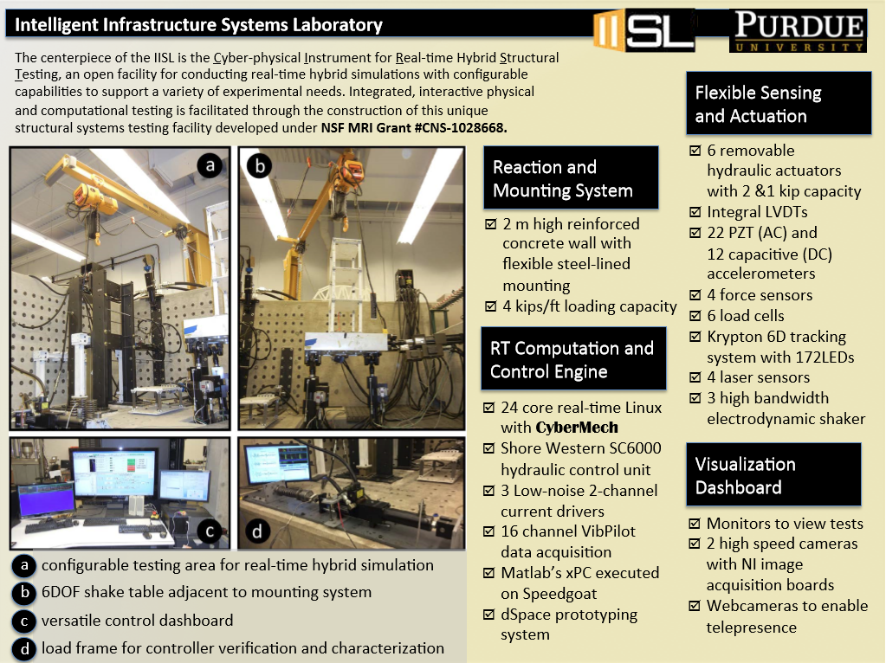

During the EMI 2025 conference in Anaheim, California, Mohamed Gomaa presented his research on May 28, 2025.
His presentation, titled "Adaptive Model Uncertainty Quantification in Real-Time Hybrid Simulation."
01 June 2025
During the EMI 2025 conference in Anaheim, California, Edwin D. Patino presented his research on May 28, 2025.
His presentation, titled "Cascade Control Strategy for Multi-Actuator Transfer Systems in Hybrid Simulation."
01 June 2025
During the EMI 2025 conference in Anaheim, California, Lalit Dongare presented his research on May 28, 2025.
His presentation, titled "System identification of heat pump dynamics for cyber physical testing of space habitats."
01 June 2025
During the EMI 2025 conference in Anaheim, California, Manuel Salmeron presented his research on May 29, 2025.
His presentation, titled "RTHS for Damage and Degradation Assessment: Challenges and Recent Advances."
01 June 2025
On May 22, 2025, Francisco Peña, Ph.D., P.E., assumed the role of President-Elect of the Indiana Structural Engineers Association
(ISEA)."
01 June 2025
During the EMI 2024 conference in Chicago, Illinois, Oscar Forero presented her research on May 31, 2024.
His presentation, titled "Experimental Development of a Seismic Isolation Device for Lunar Surface Habitat Resilience."
01 June 2024
During the EMI 2024 conference in Chicago, Illinois, Lissette Iturburu presented her research on May 30, 2024.
Her presentation, titled "Llm-based structure drawing generation from natural language description using retrieval-augmented generation technique"
01 June 2024
During the EMI 2024 conference in Chicago, Illinois, Herta Montoya presented her research on May 31, 2024.
Her presentation, titled "Thermomechanical Real-Time Hybrid Simulation for Lunar Habitats"
01 June 2024
During the EMI 2024 conference in Chicago, Illinois, Manuel Salmerón achieved notable recognition by winning second place in the Structural
Health Monitoring and Control Committee Student Paper Competition on May 29, 2024. His award-winning paper was
titled "Real-Time Hybrid Simulation for Infrastructure Degradation Assessment: Conceptual Framework and
Illustrative Application."
01 June 2024
During the EMI 2024 conference in Chicago, Illinois, Manuel Salmerón delivered two presentations on May 30, 2024.
His first presentation was titled "Real-Time Hybrid Simulation for Infrastructure Degradation Assessment:
Conceptual Framework and Illustrative Application," and his second was "Reinforcement Learning-based Bridge
Inspection Management."
01 June 2024
During the sixth Midwest Smart Structures Colloquium (MSSC) on April 26, 2024, Dr. Alana Lund
delivered the keynote presentation titled "Development and Experimental Verification of Track Nonlinear
Energy Sink with Rotational Mass for Seismically-Excited Buildings."
29 April 2024
The sixth Midwest Smart Structures Colloquium (MSSC) took place from April 26th to 28th at Camp
Tecumseh YMCA in West Lafayette, with a total of 37 attendees. Each student delivered a presentation in
the Pecha Kucha style.
29 April 2024
During the ASCE Earth & Space 2024 Conference, on Apr 16, 2024, Ph.D. student Oscar Forero gave a presentation titled "Seismic Vulnerability Assessment of
Non-Structural Elements Inside an Inflatable
Lunar Habitat".
16 April 2024
During the 2024 Purdue Road School, on Mar 12, 2024, Ph.D. student Manuel Salmeron gave a presentation titled "Cost Quantification of Construction Defects on Concrete Decks".
12 March 2024
Graduate student Christina McNichol was awarded Indiana Structural Engineers Association (ISEA) Scholarship.
15 February 2024
During 14th International Workshop on Structural Health Monitoring in San Jose, California, Sep 12-14, 2023, Professor Shirley Dyke was awared "2021 SHM person-of-the-year" award.
12 September 2023
During 14th International Workshop on Structural Health Monitoring in San Jose, California, Sep 12-14, 2023, Professor Shirley Dyke gave a presentation titled Reinforcement Learning-based Bridge Inspection Management.
12 September 2023
During the Engineering Mechanics Institute Conference 2023 in Atlanta, Georgia, Jun 6-Jun 9, 2023, PhD Student Herta Montoya won first place in the best student paper competition.
6 June 2023
During the Engineering Mechanics Institute Conference 2023 in Atlanta, Georgia, Jun 6-Jun 9, 2023, PhD Students Xiaoyu Liu, Herta Montoya, Manuel Salmeron gave the presentations, respectively.
6 June 2023
Prof. Shirley Dyke was awarded the 2023 Faculty and Lecturere Excellence Awards, which is to honor outstanding faculty and lecturers. (Link)
21 April 2023
During the CEGSAC Research Symposium in Purdue University, April 21, 2023, PhD student Herta Montoya was awarded with the 2nd place for the best poster presentation award
21 April 2023
During the 5th Midwest Smart Structure Colloquium in University of Illinois Urbana-Champaign, April 14 - April 16, 2023, PhD student Montahareh Mirfarah was awarded with the 3rd place for the best presentation award
14 April 2023
During the 5th Midwest Smart Structure Colloquium in University of Illinois Urbana-Champaign, April 14 - April 16, 2023, master student Benjamin Wogen was awarded with the 2nd place for the best presentation award
14 April 2023
During the 5th Midwest Smart Structure Colloquium in University of Illinois Urbana-Champaign, April 14 - April 16, 2023, PhD student Herta Montoya was awarded with the 1st place for the best presentation award
14 April 2023
During the Engineering Mechanics Institute Conference 2022 in Baltimore, Maryland, May 31-Jun 4, 2022, PhD Students Xiaoyu Liu, Herta Montoya, Xin Zhang and Lissette Iturburu gave the presentations, respectively
31 May 2022
Prof. Dyke was awarded the 2022 George W. Housner Structural Control and Monitoring Medal in recognition of ourstanding research contributions to the broad field of structural control and health monitoring. (Link)
20 April 2022
Prof. Shirley Dyke, Herta Montoya, Juan Park and Zixin Wang delivered a presentation entitled Resilient Extra Terrestrial Habitats at Indiana Structural Engineering Association Spring Conference in Indianapolis March 03, 2022.
03 March 2022
Alana Lund, post doctor in civil engineering, delivered a presentation at Mechanistic Machine Learning and Digital Twins for Computational Science Conference in San Diego, entitled The Role of Digital Twins for Cyber-Physical Testing.
07 February 2022
Montoya Herta, PhD in civil engineering, gave a presentation at 40th International Modal Analysis Conference in Orlando, entitled Variational filter for Predictive Modeling of Structural Systems.
26 September 2021
Dr. Yuguang Fu joined the faculty in the School of Civil and Environmental Engineering at the Nanyang Technological Univeristy, Singapore.
01 August 2021
Archived Articles
The Intelligent Infrastructure Systems Laboratory works to bring technological advances to infrastructure design and implementation. Headed by Dr. Shirley J. Dyke, the lab joins the fields of Mechanical and Civil Engineering for the
betterment of our building systems. Our projects range widely through the interconnections of these two fields. One of the primary focuses of the group is the development of the Real Time Hybrid Simulation technique, which couples physical
and numerical systems to produce a full structural experiment. Several students also study structural control techniques, particularly methods incorporating base isolation devices and magneto-rheological dampers. Vision based monitoring
strategies are also a focus of the group, as students develop and improve methods to detect and report structural damage.
Highlights of our research accomplishments are available in a series of short videos.

Graduate Students
The IISL welcomes new researchers and visiting scholars! We seek to broaden our horizons by incorporating new ideas into our focus. For information on how to apply to the graduate program, please see the following links:
Program Requirements
Application
FAQs
Undergraduate Students
Undergraduates are encouraged to join the group as well. Applications are taken yearly through the Summer Undergraduate Research Fellowship (SURF) program. For opportunities to get involved during the semester, please contact us at the
email listed below.
Program Requirements
Application
FAQs
Intelligent Infrastructure Systems Laboratory
Bowen Laboratories
1040 South River Road
West Lafayette, IN, 47907